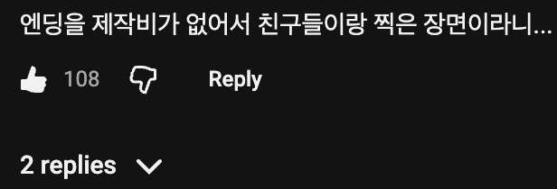
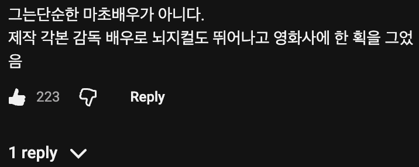
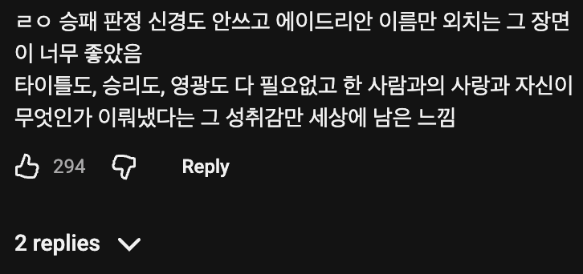
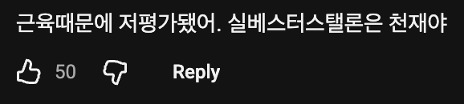

ㅇㅈ... 오히려 리얼하게느껴짐
하라는 주지사는 안하고
그리고 2 3 4 가면서 개씹꼴마초자본영화로 돌변하는것까지가 참 맛있는 서사네요
람보도 이랬지
ㅋㅋㅋㅋ 3편 까진 볼만했던 거 같은데
4편 드라고 오잉 크리드 사망 오잉
5편은 말도 못꺼내겠다
https://m.youtube.com/watch?v=OrLQUEX_Pfo&pp=ygUN66Gd7YKkIOyXlOuUqQ%3D%3D
마지막 카메라 멈추며 엔딩치는거 보고
와 머지 했는데 스탤론 생각이었다니
(대충달리기하는데진짜복싱선수인줄알고과일받았다는이야기)
저예산 영화인데 노래는 트리플에스급을 가져왔네
서바이버의 개지리는 1, 2 OST들 크
1편에서 록키가 훈련하면서 나오는 노래는 당시 무명이었던 빌 콘티가 만든 곡임. 코러스 구할 돈도 없어서 와이프와 와이프의 회사 직원들을 모아서 부르게 함. 근데 대박이 나서 유명 영화음악가가 됨.
3편의 주제곡인 서바이버의 'eye of the tiger'는 원래 퀸의 'Another One Bites the Dust' 를 쓰려고 했으나 무산되면서 당시 시카고의 무명 밴드(엘범 2장을 실패해서 레코드사에서 쫓겨나기 직전이었음) 서바이버에게 급하게 의뢰해서 4일만에 만들었다고 함. 결국 서바이버는 이 노래로 떡상하고 최고의 인기곡이 됨.
중독적인 노래의 기타 리프는 영상에서 펀치가 터질 때마다 코드를 맞추었으며, 사흘 만에 만든 데모가 노래에 그대로 쓰였는데 스텔론은 야성적이고 정돈되지 않은 초기 데모의 에너지를 더 마음에 들어했다고 함. 노래가 어마어마한 인기를 얻고 2년 후 LA의 공연장에 퀸의 브라이언 메이가 찾아와 노래를 어떻게 썼냐고 묻자 그들은 오히려 "고마워요 퀸. 덕분에 우리가 살았어요" 라고 대답했다고 함.
마지막 카메라 멈추는 연출이 엄청 여운남는 느낌이긴했음
심지어 스토리도 본인이씀
아마 출연도 했을 걸
어느 장면에?
자세히보면 나옴 그 나온장면을 사람들이 좋아함
짜장면으로 맞아볼래? 하면서 권투장갑을 꺼내드는게 예술이었지
아마 대박났지?
애 태어나고 록키 다시보고 눈물이 왈칵...
록키1부터 5까지 다 보고 6 보면 뭔가 한사람의 일대기 보는것 같아서 여운이 남더라
불세출의 복싱영화 록키 제작 비화
https://www.dogdrip.net/731918129
"에이드리아아아아아아아아안-!!!!!!"
영화 제작과정 자체에 서사와 로망이 가득하다.
알고보면 돈 때문에 만든 대사나 장면들이 많은데 그것마저 좋았음